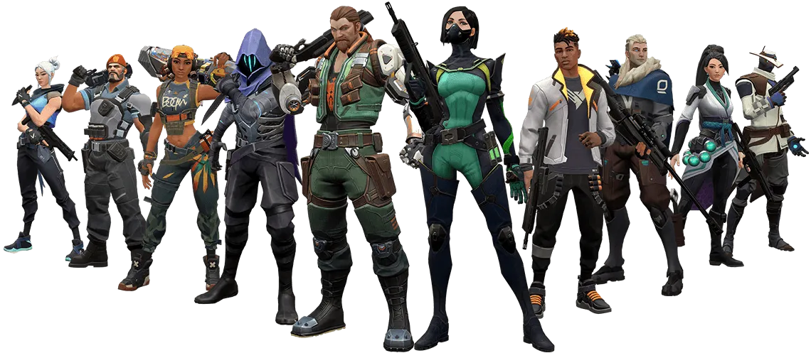
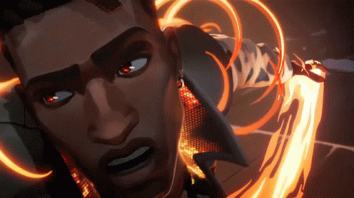
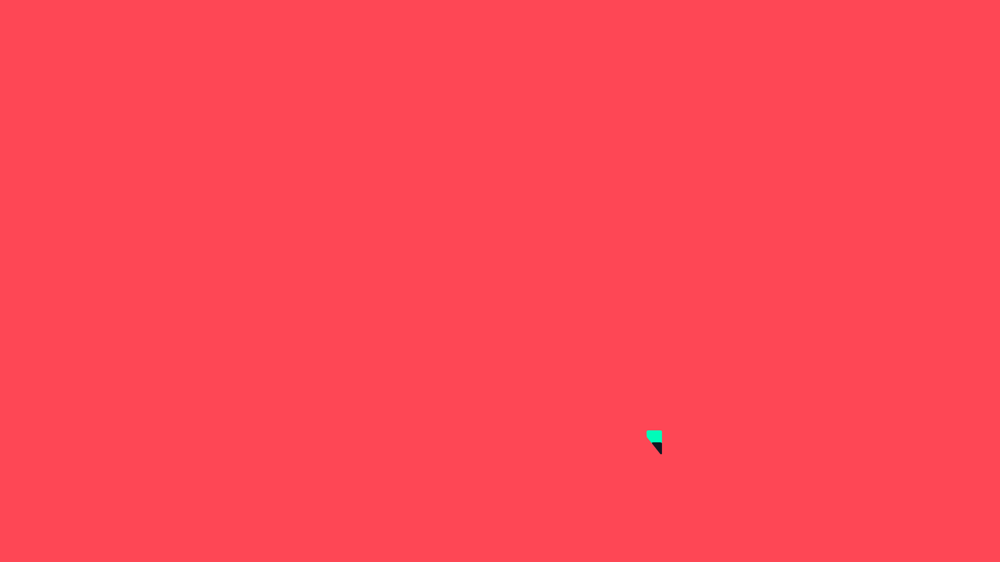

Welkom bij het Game Museum!
Dit is de officiële website van Valorant Sam, een eerbetoon aan het populaire 5v5 schietspel Valorant. Hier ontdek je alles over de game, de wapens, de verschillende spelmodes en meer!
Informatie Valorant
Valorant is een teamgebaseerd tactisch schietspel ontwikkeld en uitgegeven door Riot Games. De game biedt intense 5v5-gevechten met verschillende personages (Agents) die elk hun unieke vaardigheden hebben (abilities).

